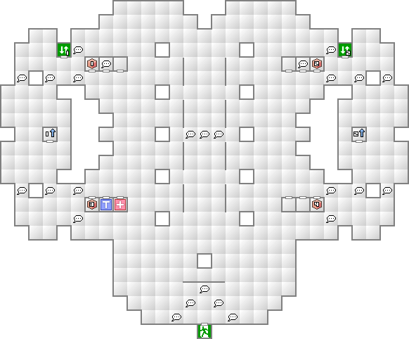
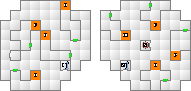
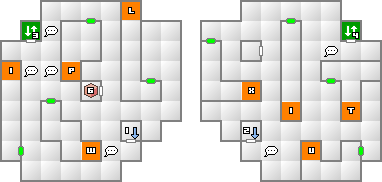
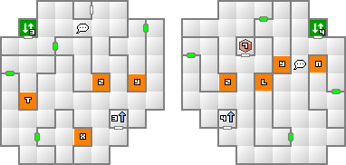
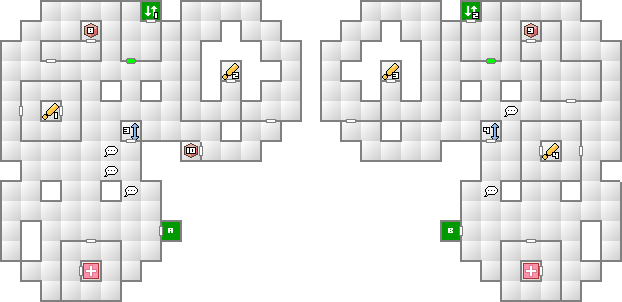
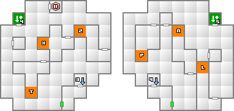
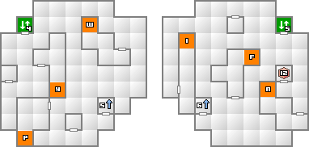
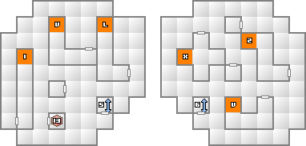
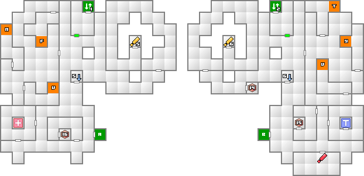
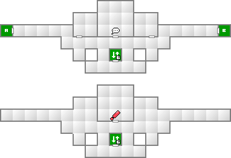

天海モノリスは2本のタワーから成り立っており、それぞれにシックスとランチが捕らえられている。まずは両方の塔の20階まで昇り二人を救出しよう。2人目を救出したら、その階の制御室に行くことで、上の階へ進むためのパスワードを解くことになる。
パスワードは今まで登ってきた階に配置されたアルファベットを正しく選んでスイッチを入れることで解けるようになっている。パスワードを入力するフロアに入ると、ネミッサがそのフロアで入れるべきアルファベットを教えてくれるので、それに従ってスイッチを入れていく。小部屋の形がそのままアルファベットの形になっているので、マッパーで確認しながら入れていこう。
無事に片方のパスワードを入力し終えた状態で20階のモニタルームに行けば、その階から1階までの直通エレベーターが開通する。同じ手順でもう片方も解除することで、両方の直通エレベーターが開通し、20階より上の階へ進入できるようになる。
20階より上でもパスワードを解いていく。以降はネミッサのヒントが無いので、ちゃんと確かめなら入れていこう。左側は21階から順にTWIN、同じく右側は順にPIXYと入れていけばよい。これで中央部のロックが外れて上層へ侵入することができる。中央部上層ではボス戦となる。
両方とも適当にぶらついているだけで出会える悪魔で、かなりお手軽に死神ゲーデを作成できる。マカ・カジャ、メギド、マハ・ジオンガ、悪魔の一喝と、ほぼスキの無いスキル構成で非常に強力な悪魔だ。知力・魔力共に20を超えているので、御霊を使って魔法攻撃力を最高まで持っていくこともできる。業魔殿で作成すればマカラカーンのオマケもついてくるので、是非作成したい。
メ・ディアラマ、ラク・カジャ、スク・カジャを所持し、MP豊富で相性も申し分なく、おまけに友愛。場合によってはMP回復も行えるなど、回復・補助要因として最後まで使うことができる悪魔。ジャンヌ・ダルクがいるだけで戦闘が安定する。非常にオススメ。
材料に必要な威霊ブラックマリアは、新月時に適当な神族同士を合体させるだけでよい。モノリス1階の邪神カナロアとペットショップの女神スカアハでOKだ。
| 能力 | LV68 HP8550 MP1196 力22 知15 魔19 耐23 速14 運12 |
|---|---|
| 特技 | ディアラマ タル・カジャ 回転斬り ベノンザッパー |
| ギロチンフェイク |
| 火炎 | 氷結 | 電撃 | 衝撃 | 破魔 | 呪殺 | 万能 |
|---|---|---|---|---|---|---|
| 精神 | 神経 | 魔力 | 打撃 | 斬撃 | 技 | 銃撃 |
| 100 | 100 | 100 | 200 | 無効 | 無効 | 100 |
| 無効 | 無効 | 無効 | 50 | 50 | 50 | 50 |
タル・カジャからの回転斬りやベノンザッパーは驚異の威力を誇る。タル・ンダ、ラク・カジャは必須と言えよう。ネミッサに関しては、デモンズスキンを装備することで上記2つの攻撃を無効化できる。
基本的に物理一辺倒の攻撃しかしてこないので、物理に強い悪魔で編成するのもいいだろう。例えば、鬼神フツヌシなら斬撃を反射することが可能だ。
また、攻撃力が高いのを逆手に取り、わざと低レベルの悪魔で編成し、防具を外して防御力をできるだけ低い状態にして、物反鏡を使用して大ダメージを一気に反射して倒すという手もある。
死神ゲーデがいるなら早速腕を振るって貰える。新月時にマカ・カジャMAXからの悪魔の一喝は3000ダメージを軽くオーバーしてしまう。あっと言う間に戦闘が終わるだろう。
秘神キンマモンのジャッジメントは、このアザゼルと次のサタナエルで有効。どうしても勝てないなら使ってみるのもいいだろう。
| 能力 | LV70 HP13557 MP4010 力15 知19 魔27 耐19 速15 運13 |
|---|---|
| 特技 | アギラオ マハ・ジオンガ メギドラ サンダーボルト |
| 光る眼 イビル・トランス 生体MAG抜き |
| 火炎 | 氷結 | 電撃 | 衝撃 | 破魔 | 呪殺 | 万能 |
|---|---|---|---|---|---|---|
| 精神 | 神経 | 魔力 | 打撃 | 斬撃 | 技 | 銃撃 |
| 100 | 100 | 吸100 | 吸100 | 無効 | 無効 | 100 |
| 無効 | 無効 | 無効 | 100 | 100 | 無効 | 反100 |
光る眼を使用してくるので耐性が無い場合はテトラジャは必須となる。主人公が食らってしまったら即ゲームオーバーだ。
イビル・トランスで爆弾化されてからのアギラオはかなり厄介だ。主人公だけでも神経無効にしておこう。一応神経相性の魔法なのでマカラカーンで無効化することもできる。ボムディを所持する悪魔がいないなら、魔反鏡を使わせておくのも一つの手だ。
電撃・衝撃吸収なので、電撃タイプのネミッサや死神ゲーデはメギドで攻撃するのがよい。マカ・カジャを最高までかければ一発で1000前後のダメージを出せるので、そこまで苦労はしないだろう。
マハ・ジオンガは歩人甲を装備させて対処することができるが、かなりの威力になるメギドラはラク・カジャ以外に防ぐ手だては無いので、早めに最高段階まで掛けておきたい。










| 邪神カナロア(49) | 邪神パチャカマク(41) | 妖樹アールキング(50) |
| 妖樹アルラウネ(40) | 屍鬼コスモゾンビ(44) | 怪異むらさきカガミ(49) |
| 怪異あかマント(42) | 幽鬼クドラク(46) | 幽鬼グレイマン(37) |
| 悪霊ウィッカーマン(45) | 悪霊ディブク(32) | 外道アーバンテラー(31) |
| 龍王ホヤウカムイ(50) | 龍王ミズチ(43) | 龍王ヴィーヴル(36) |
| 魔獣アーマーン(53) | 魔獣オルトロス(45) | 魔獣カソ(37) |
| 妖獣カトブレパス(52) | 妖獣カブラカン(45) | 妖獣ピアレイ(37) |
| 邪龍ムシュフシュ(50) | 邪龍ピュートーン(39) |
| 地霊トラルテクトリ(46) | 地霊ドヴェルガー(38) | 妖鬼ベルセルク(49) |
| 妖鬼ニャルモット(41) | 妖鬼ヨモツイクサ(35) | 鬼女ボルボ(51) |
| 鬼女アマゾーン(43) | 鬼女ジャヒー(34) | 邪鬼ギリメカラ(51) |
| 邪鬼ラクシャーサ(43) | 邪鬼ガシャドクロ(34) |
| 天使ドミニオン(51) | 天使ヴァーチャー(44) | 天使パワー(36) |
| 妖鳥ルフ(48) | 妖鳥タンガタ・マヌ(39) | 堕天使パイモン(52) |
| 堕天使ハルパス(40) | 凶鳥アンズー(51) | 凶鳥カマソッソ(36) |
| 凶鳥アンズー(51) |
| 妖魔ペリ(53) | 妖魔ロイチェクタ(44) | 妖魔ロルウイ(39) |
| 妖精ティターニア(52) | 妖精トロール(47) | 妖精ヴィヴィアン(40) |
| 夜魔サキュバス(49) | 夜魔インキュバス(42) | 魔王ロキ(59) |
| 魔王ツィツィミトル(53) | 魔王バロール(48) |
| 天使ドミニオン(51) | 妖精トロール(47) | 龍王ホヤウカムイ(50) |
| 夜魔サキュバス(49) | 妖鬼ベルセルク(49) | 鬼女ボルボ(51) |
| 邪神カナロア(49) | 凶鳥アンズー(51) | 妖樹アールキング(50) |
| 妖獣カトブレパス(52) | 怪異むらさきカガミ(49) | 魔王ツィツィミトル(53) |
| 邪龍ムシュフシュ(50) |